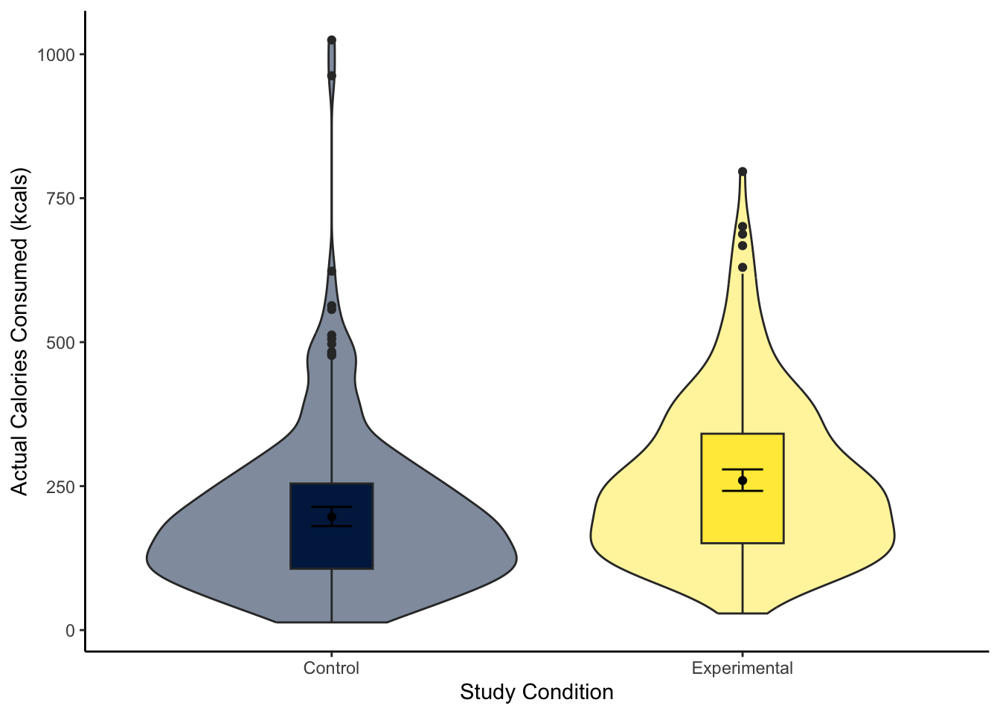
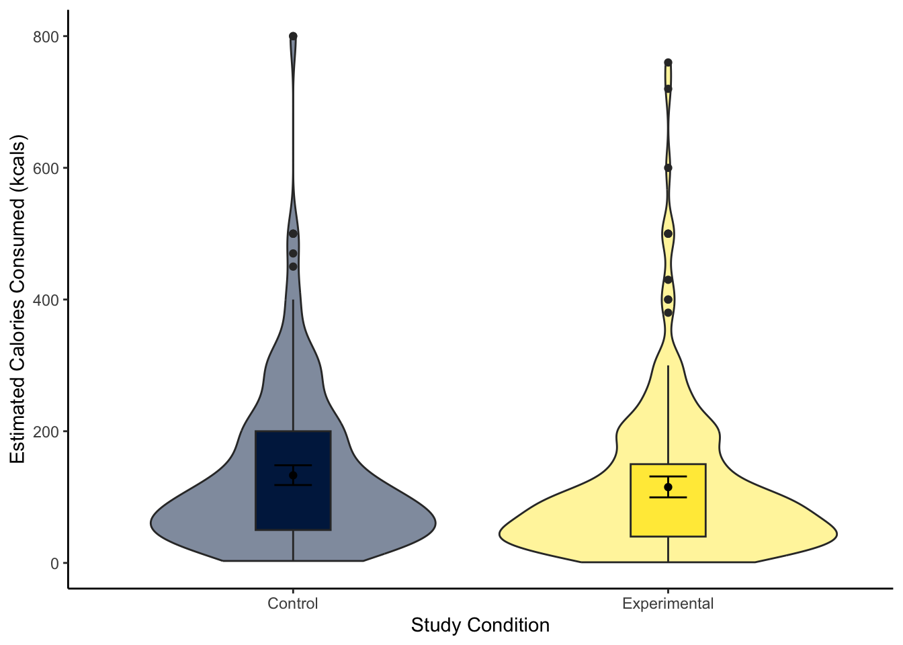

Rows: 464
Columns: 10
$ ParticipantID <dbl> 1002, 1004, 1007, 1016, 1018, 1021, 1022, 1024, 102…
$ Sex <dbl> 1, 1, 0, 1, 1, 1, 1, 1, 1, 1, 1, 1, 0, 0, 1, 1, 1, …
$ Age <dbl> 18, 19, 19, 21, 20, 20, 21, 21, 19, 20, 21, 20, 21,…
$ Ethnicity <dbl> 7, 3, 3, 4, 1, 3, 1, 6, 4, 7, 1, 3, 3, 4, 7, 2, 3, …
$ OzEstimate <dbl> 3.0, 2.0, 1.0, 3.0, 5.0, 1.0, 1.0, 3.0, 4.0, 1.0, 4…
$ CalEstimate <dbl> 65, 10, 20, 25, 50, 5, 20, 180, 470, 50, 130, 100, …
$ M_postsoup <dbl> 3.3, 3.1, 43.4, 5.5, 6.0, 0.8, 3.8, 4.5, 7.9, 8.1, …
$ F_CaloriesConsumed <dbl> 73.19441, 68.75839, 962.61743, 121.99069, 133.08075…
$ Condition <fct> 0, 0, 0, 0, 0, 0, 0, 0, 0, 0, 0, 0, 0, 0, 0, 0, 0, …
$ Condition_label <chr> "Control", "Control", "Control", "Control", "Contro…2 Regression with one categorical predictor
In these first two chapters, we focus on simple linear regression for testing research questions and hypotheses. We are starting slow and demonstrating how common statistical tests such as correlation and t-tests are specific applications of the general linear model (Lindeløv, 2019). With inferential statistics, we want to test our research questions and hypotheses by analysing the data given the research design you are working with. By adopting a modelling approach, you will have far more flexibility to adapt to the design you are working with.
In this chapter, we explore the concepts of t-tests as those specific applications compared to recreating them using linear regression. We also have a bonus section on expressing a one-sample and paired-samples design as linear models.
Chapter Intended Learning Outcomes (ILOs)
By the end of this chapter, you will be able to:
Visualise the difference between two groups on an outcome.
Apply and interpret a Student and Welch t-test.
Apply and interpret linear regression with one categorical predictor variable.
Apply and interpret linear regression adapted to one-sample and paired-samples designs.
2.1 Chapter preparation
2.1.1 Introduction to the data set
For most of this chapter, we are using open data from Lopez et al. (2023). The abstract of their article is:
Imagine a bowl of soup that never emptied, no matter how many spoonfuls you ate—when and how would you know to stop eating? Satiation can play a role in regulating eating behavior, but research suggests visual cues may be just as important. In a seminal study by Wansink et al. (2005), researchers used self-refilling bowls to assess how visual cues of portion size would influence intake. The study found that participants who unknowingly ate from self-refilling bowls ate more soup than did participants eating from normal (not self-refilling) bowls. Despite consuming 73% more soup, however, participants in the self-refilling condition did not believe they had consumed more soup, nor did they perceive themselves as more satiated than did participants eating from normal bowls. Given recent concerns regarding the validity of research from the Wansink lab, we conducted a preregistered direct replication study of Wansink et al. (2005) with a more highly powered sample (N = 464 vs. 54 in the original study). We found that most results replicated, albeit with half the effect size (d = 0.45 instead of 0.84), with participants in the self-refilling bowl condition eating significantly more soup than those in the control condition. Like the original study, participants in the selfrefilling condition did not believe they had consumed any more soup than participants in the control condition. These results suggest that eating can be strongly controlled by visual cues, which can even override satiation.
In summary, they replicated an (in)famous experiment that won the Ig-Nobel prize. Participants engaged in a intricate setting (seriously, go and look at the diagrams in the article) where they ate soup from bowls on a table. In the control group, participants could eat as much soup as they wanted and could ask for a top-up from the researchers. In the experimental group, the soup bowls automatically topped up through a series of hidden tubes under the table. The idea behind the control group is they get an accurate visual cue by the soup bowl reducing, and the experimental group get an inaccurate visual cue by the soup bowl seemingly never reducing. So, the inaccurate visual cue would interfere with natural signs of getting full and lead to people eating more.
In the original article, participants in the experimental group ate more soup than participants in the control group, but the main author was involved in a series of research misconduct cases. Lopez et al. (2023) wanted to see if the result would replicate in an independent study, so they predicted they would find the same results. In this chapter, we will explore the difference between the control and experimental groups on several variables in their data set.
2.1.2 Organising your files and project for the chapter
Before we can get started, you need to organise your files and project for the chapter, so your working directory is in order.
In your folder for statistics and research design
Stats_Research_Design, create a new folder called02_regression_categorical. Within02_regression_categorical, create two new folders calleddataandfigures.Create an R Project for
02_regression_categoricalas an existing directory for your chapter folder. This should now be your working directory.Create a new Quarto document and give it a sensible title describing the chapter, such as
02 t-tests and Regression. Save the file in your02_regression_categoricalfolder.We are working with a new data set, so please save the following data file: Lopez_2023.csv. Right click the link and select “save link as”, or clicking the link will save the files to your Downloads. Make sure that you save the file as “.csv”. Save or copy the file to your
data/folder within02_regression_categorical.
You are now ready to start working on the chapter!
2.1.3 Activity 1 - Read and wrangle the data
As the first activity, try and test yourself by completing the following task list to practice your data wrangling skills. In this example, there is not loads to do, you just need to tidy up some variables. Create a final object called lopez_clean to be consistent with the tasks below. If you want to focus on t-tests and regression, then you can just type the code in the solution.
Try this
To wrangle the data, complete the following tasks:
-
Load the following packages:
tidyverse effectsize performance
Read the data file
data/Lopez_2023.csvto the object namelopez_data.-
Create a new object called
lopez_cleanbased onlopez_data:Modify the variable
Conditionto turn it into a factor.Create a new variable called
Condition_labelby recodingCondition. “0” is the “Control” group and “1” is the “Experimental” group.
Your data should look like this to be ready to analyse:
Show me the solution
You should have the following in a code chunk:
# load the relevant packages
library(effectsize)
library(performance)
library(tidyverse)
# Read the Lopez_2023.csv file
lopez_data <- read_csv("data/Lopez_2023.csv")
# turn condition into a factor and recode
lopez_clean <- lopez_data %>%
mutate(Condition = as.factor(Condition),
Condition_label = case_match(Condition,
"0" ~ "Control",
"1" ~ "Experimental"))2.1.4 Activity 2 - Explore the data
Try this
After the wrangling steps, try and explore lopez_clean to see what variables you are working with. For example, opening the data object as a tab to scroll around, explore with glimpse(), or try plotting some of the individual variables.
In lopez_clean, we have the following variables:
| Variable | Type | Description |
|---|---|---|
| ParticipantID | double | Participant ID number. |
| Sex | double | Participant sex. |
| Age | double | Participant age in years. |
| Ethnicity | double | Participant ethnicity. |
| OzEstimate | double | Estimated soup consumption in ounces (Oz). |
| CalEstimate | double | Estimated soup consumption in calories (kcals). |
| M_postsoup | double | Actual soup consumption in ounces (Oz). |
| F_CaloriesConsumed | double | Actual soup consumption in calories (kcals). |
| Condition | integer | Condition labelled numerically as 0 (Control) and 1 (Experimental). |
| Condition_label | character | Condition as a direct label: Control and Experimental. |
We will use this data set to demonstrate t-tests and regression when you have one categorical predictor.
2.2 Comparing differences using the t-test
Like correlations are a specific application of the general linear model for the relationship between two continuous variables, t-tests are a specific application for the difference between two groups. Before we demonstrate how you can express this kind of design as a regression model, we cover t-tests so you know how to calculate and interpret them when you come across them in your research.
2.2.1 Activity 3 - Visualising the difference
To visualise the difference between two groups, it is useful to create something like a boxplot early for yourself, then provide a more professional looking violin-boxplot to help communicate your results. For most of the demonstrations in this chapter, we will try and answer the research question: “Is there a difference in actual calories consumed between the control and experimental groups?”
Try this
Using your data visualisation skills from Repro Res, recreate the violin-boxplot below using the variables F_CaloriesConsumed and Condition_label from lopez_clean.

Looking at the graph, the group consumed more calories on average.
Show me the solution
The violin-boxplot shows the experimental group who had the biased visual cues consumed more soup in calories than the control group who had the accurate visual cues.
You should have the following in a code chunk:
lopez_clean %>%
ggplot(aes(y = F_CaloriesConsumed, x = Condition_label, fill = Condition_label)) +
geom_violin(alpha = 0.5) +
geom_boxplot(width = 0.2,
fatten = NULL) +
stat_summary(fun = "mean",
geom = "point") +
stat_summary(fun.data = "mean_cl_boot", # confidence interval
geom = "errorbar",
width = 0.1) +
scale_fill_viridis_d(option = "E") +
scale_y_continuous(name = "Actual Calories Consumed (kcals)") +
scale_x_discrete(name = "Study Condition") +
guides(fill = FALSE) +
theme_classic()
2.2.2 Activity 4 - Using the t.test() function
A t-test is a specific application of the general linear model. In this test, we express the difference in an outcome between two groups as a kind of standardised mean difference. If you are interested, see the Handy Workbook (McAleer, 2023) for the calculations behind the Student and Welch t-test. Conceptually, a t-test is the difference between two groups divided by the standard error of the difference. There are two main versions of a t-test:
There is a function built into R to calculate the t-test: t.test(). The function requires:
A formula like
lm()where you specify the outcome/dependent variable and the predictor/independent variable in the formoutcome ~ predictor.The data set you want to use.
For our lopez_clean data, we would run the following code for a two-tailed Welch t-test:
Welch Two Sample t-test
data: F_CaloriesConsumed by Condition_label
t = -4.8578, df = 453.45, p-value = 1.638e-06
alternative hypothesis: true difference in means between group Control and group Experimental is not equal to 0
95 percent confidence interval:
-88.55610 -37.54289
sample estimates:
mean in group Control mean in group Experimental
196.6818 259.7313 For the three key concepts of inferential statistics, we get
- Hypothesis testing: p < .001, suggesting we can reject the null hypothesis assuming \(\alpha\) = .05.
What does 1.638e-06 mean?
Remember: R reports very small or very large numbers using scientific notation to save space. We normally report p-values to three decimals, so we report anything smaller as p < .001 to say it is smaller than this.
If you want to see the real number, you can use the following function which shows just how small the p-value is:
- Effect size: Somewhat annoyingly, we do not directly get the mean difference between groups as a raw/unstandardised mean difference. We must manually calculate it by subtracting the means of each group (196.6818 - 259.7313 = -63.05). So, those in the experimental group ate on average 63 more calories of soup than the control group.
Does it matter whether the difference is positive or negative?
For effect sizes describing the difference between two groups, it is the absolute difference which is important, providing it is consistent with your predictions (if applicable). If you entered the groups the other way around, the mean difference would become 259.7313 - 196.6818 = 63.05. The same applies when we calculate a standardised mean difference like Cohen’s d later.
- Confidence interval: [-88.56, -37.54], although we do not get the mean difference, we get the confidence interval around the mean difference.
To summarise: A Welch t-test showed participants in the experimental group ate significantly more calories of soup than participants in the control group, t (453.45) = -4.86, p < .001. On average, those in the experimental group ate 63.05 (95% CI = [37.54, 88.56]) more calories than those in the control group.
When you have statistics software like R to do the heavy lifting for you, there is not really a scenario where you would use the Student t-test anymore, but if you did, you can use the var.equal argument to say you assume there are equal variances in each group:
Two Sample t-test
data: F_CaloriesConsumed by Condition_label
t = -4.8625, df = 462, p-value = 1.591e-06
alternative hypothesis: true difference in means between group Control and group Experimental is not equal to 0
95 percent confidence interval:
-88.52983 -37.56915
sample estimates:
mean in group Control mean in group Experimental
196.6818 259.7313 You can see the main difference between the two versions is the Welch t-test corrects the degrees of freedom, so they are a decimal. While the Student t-test does not correct the degrees of freedom, so they are predictably N - 2.
To summarise: A Student t-test showed participants in the experimental group ate significantly more calories of soup than participants in the control group, t (462) = -4.86, p < .001. On average, those in the experimental group ate 63.05 (95% CI = [37.57, 88.53]) more calories than those in the control group.
One further useful argument is specifying a one-tailed test if you have a specific prediction. The only downside to using linear models later is there is not a simple argument to apply a one-tailed test.
Welch Two Sample t-test
data: F_CaloriesConsumed by Condition_label
t = -4.8578, df = 453.45, p-value = 8.188e-07
alternative hypothesis: true difference in means between group Control and group Experimental is less than 0
95 percent confidence interval:
-Inf -41.6571
sample estimates:
mean in group Control mean in group Experimental
196.6818 259.7313 The difference here is specifying the alternative argument. You can use “less” or “greater” depending if you predict a negative (group A < group B) or positive difference (group A > group B).
2.2.3 Activity 5 - Calculating Cohen’s d
Raw/unstandardised effect sizes are great for putting results in context, particularly when the units are comparable across studies. For our outcome in this study, differences in calories are easy to put in context.
Alternatively, it can be useful to calculate standardised effect sizes. This helps for power analyses and when you want to compare across comparable studies with slightly different measurement scales.
There are different formulas for calculating Cohen’s d, but if you know the t-value and degrees of freedom, you can calculate Cohen’s d through:
\(d = \frac{2t}{\sqrt{df}} = \frac{-9.725}{21.49} = -0.45\)
Note the different formulas make different assumption and have various rounding errors from the statistics available, so this value will be slightly different to what we calculate shortly.
It is important to know the concepts before you use shortcuts, but there is the cohens_d() function from the t.test().
| Cohens_d | CI | CI_low | CI_high |
|---|---|---|---|
| -0.4523004 | 0.95 | -0.6366884 | -0.2674345 |
Try this
Great work following along so far, but now it is time to test your understanding on a new set of variables. Use the variables CalEstimate and Condition_label from lopez_clean. We can ask the question: “What is the difference in estimated calories consumed between the experimental and control groups?”
Create a violin-boxplot to visualise the difference between
CalEstimateandCondition_labelfromlopez_clean.-
Apply the Welch t-test to get your inferential statistics and answer the following questions:
Hypothesis testing: Assuming \(\alpha\) = .05, the difference between the experimental and control groups on estimated calories consumed was .
Effect size: Rounded to 2 decimals, the raw effect size was an average difference of estimates calories between the two groups. Expressed as a standardised effect size, this difference equates to Cohen’s d = .
Confidence interval: Rounded to 2 decimals, the 95% confidence interval for the mean difference is to . The 95% confidence interval for Cohen’s d is to .
Show me the solution
The violin-boxplot shows little difference between the two groups on estimated calories consumed.
lopez_clean %>%
ggplot(aes(y = CalEstimate, x = Condition_label, fill = Condition_label)) +
geom_violin(alpha = 0.5) +
geom_boxplot(width = 0.2,
fatten = NULL) +
stat_summary(fun = "mean",
geom = "point") +
stat_summary(fun.data = "mean_cl_boot", # confidence interval
geom = "errorbar",
width = 0.1) +
scale_fill_viridis_d(option = "E") +
scale_y_continuous(name = "Estimated Calories Consumed (kcals)") +
scale_x_discrete(name = "Study Condition") +
guides(fill = FALSE) +
theme_classic()
For our inferential statistics, a Welch t-test showed the difference is not statistically significant, t (455.06) = 1.60, p = .110.
Welch Two Sample t-test
data: CalEstimate by Condition_label
t = 1.6001, df = 455.06, p-value = 0.1103
alternative hypothesis: true difference in means between group Control and group Experimental is not equal to 0
95 percent confidence interval:
-4.080399 39.846433
sample estimates:
mean in group Control mean in group Experimental
133.0328 115.1498 The control group estimated they consumed 17.88 (95% CI = [-4.08, 39.85]) more calories than the experimental group, but the difference was not significant. Expressed as a standardised effect size, this equates to Cohen’s d = 0.15 (95% CI = [-0.03, 0.33]).
2.3 Linear regression with one categorical predictor
Now you know how to calculate a t-test in R, we can turn to simple linear regression as a more flexible tool for modelling the difference between two groups. As a reminder, there is a chapter in the Handy Workbook (McAleer, 2023) dedicated to manually calculating simple linear regression if you want to work through what the functions are doing behind the scenes.
2.3.1 Activity 6 - Descriptive statistics
For all the information we want to include in a report, calculating descriptive statistics is helpful for the reader to show the context behind the results you present. Here, we can report the mean and standard deviation of our outcome per group.
lopez_clean %>%
group_by(Condition_label) %>%
summarise(mean_cals = round(mean(F_CaloriesConsumed), 2),
sd_cals = round(mean(F_CaloriesConsumed), 2))| Condition_label | mean_cals | sd_cals |
|---|---|---|
| Control | 196.68 | 196.68 |
| Experimental | 259.73 | 259.73 |
Note
If you want some reinforcement of how these skills apply to published research, look at Table 1 in Lopez et al. (2023). The means and standard deviations here (and Cohen’s d from Activity 5) exactly reproduce the values they report, apart from the SD for the control group (maybe there is a typo in their article).
2.3.2 Activity 7 - Using the lm() function
For our research question of “is there a difference in actual calories consumed between the control and experimental group?”, we can address it with simple linear regression. In this study, we can make causal conclusions as it was an experiment to randomly allocate people into one of two groups, but you can also use regression to compare two self-selecting groups when you cannot make a causal conclusion in isolation. Think carefully about what you can conclude from your design.
Like Chapter 1, we start by defining our regression model with a formula in the pattern outcome ~ predictor and specify the data frame you want to use. We must then use the summary() function around your model object to get all the statistics you need.
There are two ways you can use a categorical predictor. First, we can code groups numerically which people called dummy codingEntering a categorical predictor using two values such as 0 and 1.. You code your first group 0 and you code your second group as 1, which maps on directly to how the regression model works. Let’s look at the output.
# Condition as a factor containing 0 and 1
lm_cals_numbers <- lm(formula = F_CaloriesConsumed ~ Condition,
data = lopez_clean)
summary(lm_cals_numbers)
Call:
lm(formula = F_CaloriesConsumed ~ Condition, data = lopez_clean)
Residuals:
Min 1Q Median 3Q Max
-230.90 -99.09 -24.15 62.83 828.04
Coefficients:
Estimate Std. Error t value Pr(>|t|)
(Intercept) 196.682 8.888 22.130 < 2e-16 ***
Condition1 63.049 12.966 4.863 1.59e-06 ***
---
Signif. codes: 0 '***' 0.001 '**' 0.01 '*' 0.05 '.' 0.1 ' ' 1
Residual standard error: 139.4 on 462 degrees of freedom
Multiple R-squared: 0.04869, Adjusted R-squared: 0.04663
F-statistic: 23.64 on 1 and 462 DF, p-value: 1.591e-06Compared to when we had a continuous predictor in Chapter 1, the output is identical. We just need to remember what the key numbers represent. The intercept is the predicted value of your outcome when your predictor is set to 0. When we have two groups coded as 0 and 1, this means the intercept is essentially the mean value of group 0 (here, the control group). We call this the reference groupIn a dummy-coded variable, the first level of your variable, typically 0.. You can confirm this by comparing the intercept estimate 196.68 to the mean value of the control group we calculated in Activity 6.
The slope estimate then represents how we predict the outcome to change for every 1-unit increase in the predictor. Since we coded the predictor 0 and 1, this just represents the shift from group 1 to group 2. We call the group we code as 1 the target groupIn a dummy-coded variable, the second level of your variable, typically 1.. You see the target group appended to the variable name, which is Condition1 here. So, for a categorical predictor, the slope represents the mean difference between the reference group (0) and the target group (1): 63.05. In contrast to the t-test, this is our raw/unstandardised effect size for the mean difference we do not need to manually calculate.
Does it matter if the slope is positive or negative?
When you have a categorical predictor, the sign is only important for interpreting which group is bigger or smaller. The absolute size is relevant for the effect size where a larger absolute value indicates a larger effect. Whether the slope is positive or negative depends on the order of the groups and which has a larger mean. If the reference is larger than the target, you will get a negative slope. If the target is larger than the reference, you will get a positive slope.
Like the continuous predictor, we get values for \(R^2\) and adjusted \(R^2\), showing we explain .046 (in other words, 4.6%) variance in the outcome through our condition manipulation. We then get the model fit statistics, but with a single predictor, the p-value is identifical to the slope.
Alternatively, you can use character labels for your categorical predictor and it will still work. This time, we use Condition_label. By default, it will set the order of the reference and target groups alphabetically, but you can manually specify the order by setting factor levels.
# Condition_label as characters
lm_cals_labels <- lm(formula = F_CaloriesConsumed ~ Condition_label,
data = lopez_clean)
summary(lm_cals_labels)
Call:
lm(formula = F_CaloriesConsumed ~ Condition_label, data = lopez_clean)
Residuals:
Min 1Q Median 3Q Max
-230.90 -99.09 -24.15 62.83 828.04
Coefficients:
Estimate Std. Error t value Pr(>|t|)
(Intercept) 196.682 8.888 22.130 < 2e-16 ***
Condition_labelExperimental 63.049 12.966 4.863 1.59e-06 ***
---
Signif. codes: 0 '***' 0.001 '**' 0.01 '*' 0.05 '.' 0.1 ' ' 1
Residual standard error: 139.4 on 462 degrees of freedom
Multiple R-squared: 0.04869, Adjusted R-squared: 0.04663
F-statistic: 23.64 on 1 and 462 DF, p-value: 1.591e-06
Note
If you want to test specifying the factor order to see how it affects the output, try running this code prior to the regression model:
How are t-tests and regression the same?
If you are interested in the relationship between the two concepts, we said a t-test was a specific application of the general linear model. In the t-test calculations, it expresses the mean difference between groups by the standard error of the difference. In essence, it describes the difference in standard errors, which we can describe with a t-distribution to calculate p-values.
In regression, we frame the model as how much variance you explain compared to the total amount of variance. The more variance your predictor explains, the less unexplained variance there is left over. For the slope estimate though, this is identical to the t-test as we estimate the mean difference between groups plus the standard error around the mean difference. We calculate a p-value for the slope from a t-distribution, so you get a t-value in the output.
You can see the process is identical by comparing the key values from the regression output to the Student t-test. We can recreate the mean difference to compare to the slope, the t-value is the same, the p-value is the same, the degrees of freedom are the same, and the 95% confidence intervals below are the same.
So, when you have a single categorical predictor, it is the exact same process as the Student t-test, just expressed slightly different. The only downside to this procedure is it is much more difficult to recreate the Welch t-test.
2.3.3 Activity 8 - Calculating confidence intervals
The only thing we are missing is our confidence intervals around the estimates which we can calculate through the confint() function.
Now, we can summarise the three key concepts of inferential statistics as:
Hypothesis testing: p < .001, suggesting we can reject the null hypothesis assuming \(\alpha\) = .05. The experimental group ate significantly more calories of soup than the control group.
Effect size: \(b_1\) = 63.05, suggesting the experimental group ate on average 63 more calories than the control group.
Confidence interval: [37.57, 88.53], showing the precision around the slope estimate.
Try this
Now it is time to test your understanding on a new set of variables. This time, use CalEstimate as your outcome, Condition_label as your predictor, and use lopez_clean as your data. We can ask the same question as Activity 5: “What is the difference in estimated calories consumed between the experimental and control groups?”.
Apply simple linear regression to get your inferential statistics and answer the following questions:
Hypothesis testing: Assuming \(\alpha\) = .05, Condition is a predictor of estimates calories consumed.
Effect size: Rounded to 2 decimals, the Condition slope coefficient means there was a mean difference of .
Confidence interval: Rounded to 2 decimals, the lower bound of the slope is and the upper bound is .
Show me the solution
The conclusions are the same as when we calculated the t-test, where condition is not a statistically significant predictor of estimated calories consumed. As a regression model, we get the same conclusions expressed in a slightly different way. Condition is a negative but non-significant predictor (p = .111). The control group ate 17.88 (\(b_1\) = -17.88, 95% CI = [-39.88, 4.11]) more calories than the experimental group. We explain very little variance in estimated calories consumed (adjusted \(R^2\) = .003), so the condition manipulation had little effect.
# Create lm object for condiiton label as a predictor
lm_cal_est <- lm(CalEstimate ~ Condition_label,
data = lopez_clean)
# summary of the model object
summary(lm_cal_est)
Call:
lm(formula = CalEstimate ~ Condition_label, data = lopez_clean)
Residuals:
Min 1Q Median 3Q Max
-130.03 -83.03 -33.03 44.85 666.97
Coefficients:
Estimate Std. Error t value Pr(>|t|)
(Intercept) 133.033 7.679 17.324 <2e-16 ***
Condition_labelExperimental -17.883 11.192 -1.598 0.111
---
Signif. codes: 0 '***' 0.001 '**' 0.01 '*' 0.05 '.' 0.1 ' ' 1
Residual standard error: 119.9 on 459 degrees of freedom
(3 observations deleted due to missingness)
Multiple R-squared: 0.005531, Adjusted R-squared: 0.003365
F-statistic: 2.553 on 1 and 459 DF, p-value: 0.1108 2.5 % 97.5 %
(Intercept) 117.94256 148.123015
Condition_labelExperimental -39.87763 4.1115992.3.4 Activity 9 - Standardising predictors
For simple linear regression with two levels of a categorical predictor, centering the variable does not help, but we can standardise our outcome to express the estimate in standard deviations rather than the raw units. This is analogous to calculating Cohen’s d as we express the standardised mean difference. In contrast to continuous predictors, we only need to standardise the outcome, rather than both the outcome and predictor(s). We then use the standardised variable as our outcome.
# Be careful with the bracket placement to subtract the mean first
lopez_clean <-lopez_clean %>%
mutate(actual_calories_std = (F_CaloriesConsumed - mean(F_CaloriesConsumed)) / sd(F_CaloriesConsumed))
# Condition as a factor containing 0 and 1
lm_cals_std <- lm(formula = actual_calories_std ~ Condition,
data = lopez_clean)
summary(lm_cals_std)
Call:
lm(formula = actual_calories_std ~ Condition, data = lopez_clean)
Residuals:
Min 1Q Median 3Q Max
-1.6173 -0.6941 -0.1692 0.4401 5.8000
Coefficients:
Estimate Std. Error t value Pr(>|t|)
(Intercept) -0.20749 0.06225 -3.333 0.000928 ***
Condition1 0.44163 0.09082 4.863 1.59e-06 ***
---
Signif. codes: 0 '***' 0.001 '**' 0.01 '*' 0.05 '.' 0.1 ' ' 1
Residual standard error: 0.9764 on 462 degrees of freedom
Multiple R-squared: 0.04869, Adjusted R-squared: 0.04663
F-statistic: 23.64 on 1 and 462 DF, p-value: 1.591e-06Note, the estimate may be slightly different to directly calculating Cohen’s d as there are a few formulas. If you compare to Activity 5, we got d = 0.45 there and 0.44 here. Between the estimate and 95% confidence intervals, they are off by .02, so it does not have a material impact on the results.
Tip
As before, once you know how it works conceptually, there is a shortcut where you do not need to standardise all your variables first. The standardize_parameters() which you can apply to your initial lm() object.
2.4 Checking assumptions
For the inferential statistics to work as intended, the model makes certain assumptions about the data you are putting into it and the accuracy of the inferences depends on how sensible these assumption are.
2.4.1 Activity 10 - Diagnostic plots for linear regression
We have the same assumptions for simple linear regression now we have a categorical predictor:
The outcome is interval/ratio level data.
The predictor variable is interval/ratio or categorical (with two levels at a time).
All values of the outcome variable are independent (i.e., each score should come from a different participant/observation).
The predictors have non-zero variance.
The relationship between the outcome and predictor is linear.
The residuals should be normally distributed.
There should be homoscedasticity.
Assumptions 1-4 are pretty straight forward as they relate to your understanding of the design or a simple check on the data for non-zero variance (the responses are not all the exact same value).
Assumptions 5-7 require diagnostic checks on the residuals from the model. In contrast to continuous predictors, they are a little harder to identify patterns in. As we only have two values on the x-axis (0 and 1), all the residuals will be organised into vertical lines and the trend lines to help spot patterns do not look quite right.
2.4.2 Checking linearity
When you have a categorical predictor with two levels, you meet linearity by default, so you do not need to check this assumption directly. When you have two levels, you can only fit a straight line between the values.
2.4.3 Checking normality
The qq-plot is still the same to interpret. Now, this example presents a useful case of decision making in data analysis we explore more in Chapter 4. The plot here is approaching signs of violating normality as there is a clear curve to the data points with 3 and 118 the largest deviations (you can see these on the violin-boxplot as the two highest values in the control group). For this chapter, we are sticking with it and it would be consistent with how the original authors analysed the data, but note this would be a key decision to make and justify when reporting the analysis.
2.4.4 Checking homoscedasticity
The scale-location plot is harder to interpret when you have a categorical predictor. Like linearity, the points are all arranged in two vertical lines as we only have two levels. You are looking out for the spread of the two lines to be roughly similar. They look fine here, just points 118 and 3 separated a little from the other points.
2.4.5 Checking influential cases
Finally, we have our plots for identifying influential cases. First, we get Cook’s distance for all the observations in your data. We see points 3 and 118 come up yet again, but although they are the largest deviations, they do not necessarily have worrying Cook’s distance values. There are different thresholds in the literature, but estimates range from 1, 0.5, to 4/n. It would only be under this final most conservative estimate (0.009) we would highlight several observations for further inspection.
Finally, the fifth plot shows residual values against leverage. Like Chapter 1, we cannot see the Cook’s distance threshold it uses in the plot as none of the points are a large enough deviation, despite 3 and 188 sticking out again.
2.4.6 Checking all the assumptions
Now we have covered the individual diagnostic plots, there is a handy function called check_model() from the plot() function, the output for linearity, homoscedasticity, and influential observations does not plot right as we only have two values for the predictor and the plot lines do not really work. Do not worry, you have not done anything wrong.
What might explain the funky normality?
The posterior predictive check here provides an insight into why we get potential problems with normality. The outcome is ratio but cannot be smaller than 0 as we cannot have negative calories. So, in the green line for the observed data, the data are a little skewed as it drops off prior to 0. However, the model does not know that and it happily predicts normally distributed values which go below 0, creating a mismatch between what the model predicts and the values we enter into it.
Remember the models will work regardless of the data you put into them, it is important to keep your role in mind to recognise when you need to be cautious about what you can learn from the model. This is what we will explore in Chapters 4 and 5 as we consider data screening and alternative model distributions.
Try this
In activity 8, you should have calculated the effect of condition (Condition_label) on estimated calories consumed (CalEstimate) for your independent task. Using the model object lm_cal_est, work through assumptions for simple linear regression and make a note of whether you think it meets the assumptions, or there might be any problems. Some of the assumptions you consider what you know about the design, while others you need the diagnostic plots.
The outcome is interval/ratio level data.
The predictor variable is interval/ratio or categorical (with two levels at a time).
All values of the outcome variable are independent (i.e., each score should come from a different participant/observation).
The predictors have non-zero variance.
The relationship between the outcome and predictor is linear.
The residuals should be normally distributed.
There should be homoscedasticity.
Show me the solution
- The outcome is interval/ratio level data.
The outcome is nicely ratio as estimated calories have a logical 0 point (no calories) and the units are in equal measurements..
- The predictor variable is interval/ratio or categorical (with two levels at a time).
Our predictor is categorical with two levels.
- All values of the outcome variable are independent (i.e., each score should come from a different participant/observation).
The short answer is this appears to be the case in this study. The longer answer is there might have been an issue with the participants apparently completing the study in groups of 3. It is not entirely clear in the data how they recorded this, but grouped data collection does present a potential problem with independence which you will not learn about until the final lecture on mixed effects models and the original authors did not seem to address it.
- The predictors have non-zero variance.
We have observations from both levels of the predictor.
- The relationship between the outcome and predictor is linear.
We meet linearity by default with two levels, so we do not need the plot here.
- The residuals should be normally distributed.
Like the actual calories consumed, this is firmly a clear deviation from what we expect and provides a good example of when it does not look right. If we were to analyse the data fully, we would explore the impact of this and alternative models, but for this chapter, we are going to note our concern and remember the authors analysed the data like this.
- There should be homoscedasticity.
Looking at the spread of each group, it looks fine with a similar range until both groups are more sparsely distributed above 1.
In summary, normality is a clear concern and something we will return to for your options in Chapter 4 and the course materials. For now, we will stick with the model but recognise we should be cautious.
2.5 Reporting your results
Now we have some results to go with, there are a few recommendations on how to communicate that information. If you need a reminder of APA style for formatting numbers, you can see this PDF online for a little cheat sheet for numbers and statistics.
Explain to the reader what your linear regression model was. For example, what was your outcome and predictor variable?
Report descriptive statistics to help contextualise your findings. For example, the mean/standard deviation for your outcome per group.
Provide an appropriate data visualisation to help communciate key patterns to the reader. For example, a violin-boxplot for how each group responded on your outcome.
Report all three key inferential statistics concepts for the coefficient: the slope, the confidence interval around your slope, and the p-value for hypothesis testing. When you have one predictor in simple linear regression, you typically focus on the slope as your key effect size that helps address your research question and hypothesis. APA style rounds numbers to 2 decimal places when numbers can be bigger than 1, and 3 decimals with no leading zero when it cannot be bigger than 1. When you report the unstandardised slope, you use the symbol \(b_1\) but for the standardised slope, you use Beta instead \(\beta_1\).
Provide an overview of the model fit statistics for whether your model explained a significant amount of variance in your outcome. Remember: the p-value for your model will be the same as for the slope in simple linear regression.
For our main example, we could summarise the findings as:
“Our research question was: is there a difference in actual calories consumed between the control and experimental group? To test this, we applied simple linear regression using condition as a predictor with two levels (control and experimental) and actual calories consumed as our outcome. Figure 1 shows a violin-boxplot of the difference between the control and experimental groups.
Our model explained a statistically significant amount of variance in our outcome (adjusted \(R^2\) = .047, F(1, 462) = 23.64, p < .001). Condition was a positive predictor, where the experimental group consumed on average 63 more calories than the control group (\(b_1\) = 63.05, 95% CI = [37.57, 88.53], p < .001). Expressed as a standardised effect size, the experimental group consumed 0.44 (95% CI = [0.26, 0.62]) more standard deviations than the control group.”
Note: we have not included an APA formatted Figure title here as it is not easy to format in our book, so refer to the course materials for guidance.
2.6 One- and paired-samples tests
You might find yourself in a situation where you want to test a continuous variable against a fixed value or compare conditions in the same participants. In experimental designs, you might have multiple conditions from the same participants which causes problems if you analyse the data as if they were groups as above. You will learn a more flexible approach in the final lecture on mixed effects models but for simple cases when you have two conditions, the following approach will work.
For this demonstration, we will use data from experiment 1 of Bem (2011), an (in)famous study that almost single-handedly started the replication crisis in psychology. Briefly, participants completed a computer task adapted from priming experiments where they could select one of two windows. They had to guess which window had an image hidden behind it and the images contained different stimuli like erotic or neutral/control images. Across many trials of the participants guessing the location, Bem calculated the proportion of successful trials which could range between 0 (never correct), 50 (50%, chance), and 100 (always correct). The headline finding was participants demonstrated precognition - or the ability to see into the future - to guess above chance levels, but what does the data look like?
We are working with a new data set, so please save the following data file: Bem_2011.csv. Right click the link and select “save link as”, or clicking the link will save the files to your Downloads. Make sure that you save the file as “.csv”. Save or copy the file to your data/ folder within 02_regression_categorical. Read in the data file to the object bem_data to be consistent with the tasks below.
2.6.1 Activity 11 - One-sample comparing against a fixed value
There are scenarios where you want to compare a single continuous variable against a fixed value. For example, do your participants respond significantly above or below chance?
2.6.1.1 Expressed as a t-test
As a t-test, we need to specify two arguments:
x- This is the continuous variable you want to analyse and compare the mean value of. We must use the base R operator$to specify the column from your data.mu- This is the fixed value you want to test your variable against.
In this scenario, we want to compare the hit rate to erotic images against a value of 50. This will tell us if the hit rate is significantly above or below chance.
One Sample t-test
data: bem_data$Erotic.Hits.PC
t = 2.5133, df = 99, p-value = 0.01358
alternative hypothesis: true mean is not equal to 50
95 percent confidence interval:
50.66075 55.61703
sample estimates:
mean of x
53.13889 The output is similar to the independent samples t-test. We get the p-value for hypothesis testing, the mean estimate of the variable, and it’s 95% confidence interval. To express it as an effect size, you can subtract 50 from each value. So, participants responded 3.14% above chance - statistically significant, but hardly convincing evidence for precognition.
2.6.1.2 Expressed as a linear model
We can also express this as a linear model, but we must first add a small wrangling step. In the one-sample t-test, we can manually enter a fixed value to compare the mean against. In a linear model, we must compare against 0 by subtracting the fixed value from your variable. So, we subtract 50 from all the observations, so they become a kind of deviation from 50.
In contrast to previous linear models, we only add a fixed intercept and do not add a predictor. This recreates the one-sample t-test by estimating the mean value of your outcome.
Call:
lm(formula = erotic_deviation ~ 1, data = bem_data)
Residuals:
Min 1Q Median 3Q Max
-28.139 -8.694 2.417 7.972 30.194
Coefficients:
Estimate Std. Error t value Pr(>|t|)
(Intercept) 3.139 1.249 2.513 0.0136 *
---
Signif. codes: 0 '***' 0.001 '**' 0.01 '*' 0.05 '.' 0.1 ' ' 1
Residual standard error: 12.49 on 99 degrees of freedomThis process has the benefit of directly producing your effect size, as the intercept estimate is the deviation from your fixed value (here, 50). As we calculated manually before, the erotic hit rate is 3.14% above your fixed value. If you remember back to the linear model explanations, this is where the p-value for the intercept is finally useful as it tests against 0.
If you compare to the one-sample t-test, all of these values are identical. You also have the option of calculating confidence intervals around the estimate, calculating a standardised effect size, and checking assumptions by applying the previous linear regression activities.
2.6.2 Activity 12 - Paired-samples comparing conditions
Alternatively, you might want to compare two conditions from the same participants in paired samples/within-subjects design. For example, is the hit-rate significantly higher for erotic images compared to control images?
2.6.2.1 Expressed as a t-test
To conduct a paired-samples t-test, we must specify three arguments:
x- This is the first level of your condition as a column. You need your data in wide format, so the condition levels are spread across two columns per participant. We must use the base R operator$to specify the column from your data.y- This is the second level of your condition as a column.paired- This instructs R you want a paired-samples t-test to compare conditions within participants.
In this scenario, we want to compare the hit rate for erotic images to control images.
Paired t-test
data: bem_data$Erotic.Hits.PC and bem_data$Control.Hits.PC
t = 1.8563, df = 99, p-value = 0.06638
alternative hypothesis: true mean difference is not equal to 0
95 percent confidence interval:
-0.2277431 6.8388542
sample estimates:
mean difference
3.305556 The output is almost identical to the one-sample t-test, but this time the effect size is the mean difference between conditions, not just the mean per condition. Behind the scenes, a paired-samples t-test is actually a one-sample t-test in disguise as it uses the difference between conditions as the outcome.
As an aside, Bem (2011) reported a significant difference here, but only because he reported a one-tailed test (alternative = "greater"). This is an example where you ideally need a strong (ideally pre-registered) prediction as it makes a material impact on the inferences you would make.
2.6.2.2 Expressed as a linear model
Finally, we can express a paired-samples t-test as a linear model. We must apply a small data wrangling step to calculate a difference score between conditions. This is so the linear model compares the estimate against 0 of no difference. So, for this example, we create a variable for the difference between erotic and control images.
Like the one-sample scenario, we only add a fixed intercept for the new difference variance and do not add a predictor. This recreates the paired-samples t-test by estimating the mean value of your difference score.
Call:
lm(formula = erotic_control ~ 1, data = bem_data)
Residuals:
Min 1Q Median 3Q Max
-58.861 -9.556 2.250 9.194 35.583
Coefficients:
Estimate Std. Error t value Pr(>|t|)
(Intercept) 3.306 1.781 1.856 0.0664 .
---
Signif. codes: 0 '***' 0.001 '**' 0.01 '*' 0.05 '.' 0.1 ' ' 1
Residual standard error: 17.81 on 99 degrees of freedomThis process directly produces your effect size again, as the intercept estimate is the deviation from 0 for your difference score. As we saw in the paired-samples t-test output, there was a 3.31% higher hit rate for erotic images compared to control (as we calculated erotic - control).
If you compare to the paired-samples t-test, all of these values are identical. You also have the option of calculating confidence intervals around the estimate, calculating a standardised effect size, and checking assumptions by applying the previous linear regression activities.
2.7 Test Yourself
For this chapter’s knowledge check section, we have something a little different. Instead of purely conceptual questions about functions, we have another example of linear regression from Lopez et al. (2023). Feel free to create this model yourself, but we will show you some output and ask you questions based on it.
For this model, we focus on ounces of soup consumed (M_postsoup) rather than calories by each Condition group (Condition_label). You might have a good idea about the results based on the chapter, but you will still need to interpret the output accurately.
Question 1. In the violin-boxplot below, the experimental group consumed more soup in ounces than the control group: .
Question 2 For the next few questions, we have the output from a linear regression model and we would like you to interpret it.
Call:
lm(formula = M_postsoup ~ Condition_label, data = lopez_clean)
Residuals:
Min 1Q Median 3Q Max
-10.410 -4.467 -1.089 2.833 37.333
Coefficients:
Estimate Std. Error t value Pr(>|t|)
(Intercept) 8.8675 0.4007 22.130 < 2e-16 ***
Condition_labelExperimental 2.8426 0.5846 4.863 1.59e-06 ***
---
Signif. codes: 0 '***' 0.001 '**' 0.01 '*' 0.05 '.' 0.1 ' ' 1
Residual standard error: 6.285 on 462 degrees of freedom
Multiple R-squared: 0.04869, Adjusted R-squared: 0.04663
F-statistic: 23.64 on 1 and 462 DF, p-value: 1.591e-06The outcome variable in this model is and the predictor variable is .
Question 3 In this model, the reference group is and the target group is
Question 4 Rounded to 2 decimals, we predict a value of for our reference group.
Question 5 The predictor is and .
Question 6 The target group consumed on average ounces soup than the reference group.
2.8 Words from this Chapter
Below you will find a list of words that were used in this chapter that might be new to you in case it helps to have somewhere to refer back to what they mean. The links in this table take you to the entry for the words in the PsyTeachR Glossary. Note that the Glossary is written by numerous members of the team and as such may use slightly different terminology from that shown in the chapter.
| term | definition |
|---|---|
| dummy coding | Entering a categorical predictor using two values such as 0 and 1. |
| reference group | In a dummy-coded variable, the first level of your variable, typically 0. |
| Student t-test | Calculating a t-value based on the mean difference divided by the pooled standard deviation. In the Student t-test, we times the pooled standard deviation by a term containing the sample sizes of each group. |
| target group | In a dummy-coded variable, the second level of your variable, typically 1. |
| Welch t-test | Calculating a t-value based on the mean difference divided by a term containing the variance of each group. We also correct the degrees of freedom for the difference in variances. |